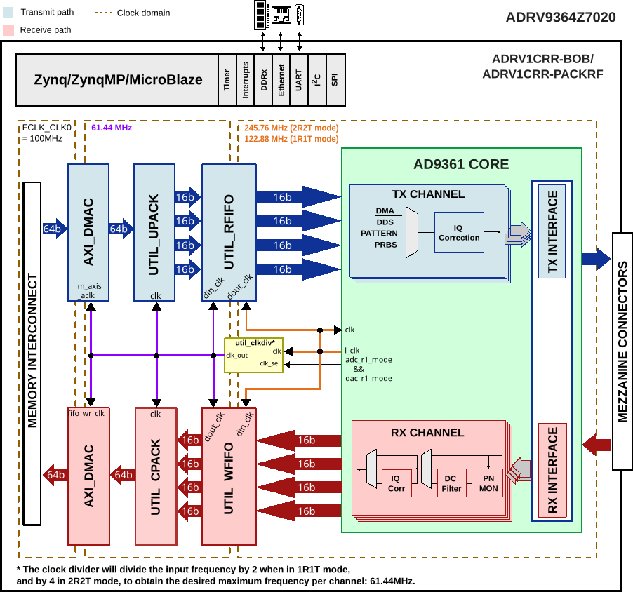

ADRV9364Z7020 HDL Project
The ADRV9364-Z7020 is built on a portfolio of highly integrated System-On-Module (SOMs) based on the Xilinx Zynq-7000 All Programmable (AP) SoC. Starting with the AD9364, it is schematically & HDL similar to the FMCOMMS4.
The purpose of the ADRV9364-Z7020 RF SOM is to provide an RF platform to software developers, system architects, product developers, etc, who want a single platform operating over a wide tuning range (70 MHz - 6 GHz) that is capable of being used for prototype, evaluation and reference design to help with production volume.
Supported boards
Supported devices
Supported carriers
ADRV1CRR-PACKRF (OBSOLETE)
ADRV1CRR-USB (OBSOLETE)
Block design
The block design is very similar to FMCOMMS4.
Block diagram
The data path and clock domains are depicted in the below diagram.
{kind=link}

Configuration modes
The AD9361 IP in this HDL project is configured to work in both CMOS and LVDS interfaces; it supports two configuration modes:
2R2T - 2x receive and 2x transmit RF channels
1R1T - 1x receive and 1x transmit RF channel
Both support only the dual port half duplex operating mode. The maximum data rate (for combined I and Q words) is 61.44MSPS in DDR. For more details about these modes, check the AD9361 Reference Manual, Table 48 “Maximum Data Rates and Signal Bandwidths”.
CPU/Memory interconnects addresses
The addresses are dependent on the architecture of the FPGA, having an offset added to the base address from HDL (see more at CPU/Memory interconnects addresses).
Instance |
Zynq |
|---|---|
axi_iic_main |
0x4160_0000 |
axi_sysid_0 |
0x4500_0000 |
axi_ad9361_adc_dma |
0x7C40_0000 |
axi_ad9361_dac_dma |
0x7C42_0000 |
axi_ad9361 |
0x7902_0000 |
I2C connections
I2C type |
I2C manager instance |
Alias |
Address |
I2C subordinate |
|---|---|---|---|---|
PL |
iic_main |
axi_iic_main |
0x4160_0000 |
— |
SPI connections
The SPI signals are controlled by a separate AXI based SPI core.
SPI type |
SPI manager instance |
SPI subordinate |
CS |
|---|---|---|---|
HPS |
SPI 0 |
AD9361 |
0 |
GPIOs
The Software GPIO number is calculated as follows:
Zynq-7000: if PS7 is used, then offset is 54
GPIO signal |
Direction |
HDL GPIO EMIO |
Software GPIO |
|---|---|---|---|
(from FPGA view) |
Zynq-7000 |
||
gpio_clksel |
INOUT |
51 |
105 |
gpio_resetb |
INOUT |
46 |
100 |
gpio_sync |
INOUT |
45 |
99 |
gpio_en_agc |
INOUT |
44 |
98 |
gpio_ctl[3:0] |
INOUT |
43:40 |
97:94 |
gpio_status[7:0] |
INOUT |
39:32 |
93:86 |
Interrupts
Below are the Programmable Logic interrupts used in the project.
Instance name |
HDL |
Linux Zynq |
Actual Zynq |
|---|---|---|---|
axi_ad9361_adc_dma |
13 |
57 |
89 |
axi_ad9361_dac_dma |
12 |
56 |
88 |
axi_ad9361 |
11 |
55 |
87 |
Building the HDL project
The design is built upon ADI’s generic HDL reference design framework. ADI distributes the bit/elf files of these projects as part of the ADI Kuiper Linux. If you want to build the sources, ADI makes them available on the HDL repository. To get the source you must clone the HDL repository.
Go to the hdl/projects/adrv9364z7020/$carrier location and run the make command.
Linux/Cygwin/WSL
~$
cd hdl/projects/adrv9364z7020/ccbob_cmos
~/hdl/projects/adrv9364z7020/ccbob_cmos$
make
Directory |
Description |
|---|---|
ccbob_cmos |
ADRV9364Z7020-SOM (CMOS Mode) + ADRV1CRR-BOB |
ccbob_lvds |
ADRV9364Z7020-SOM (LVDS Mode) + ADRV1CRR-BOB |
ccusb_lvds |
ADRV9364Z7020-SOM (LVDS Mode) + ADRV1CRR-USB |
ccpackrf_lvds |
ADRV9361Z7035-SOM (LVDS Mode) + ADRV1CRR-PACKRF* |
Legend
*removed, last release that supported the project is hdl_2021_r2
Directory/File |
Description |
|---|---|
common/adrv9364z7020_bd.tcl |
ADRV9364Z7020-SOM board design file. |
common/ccbob_bd.tcl |
carrier, break out board design file. |
common/ccusb_bd.tcl |
carrier, usb board design file. |
Note
FMC & BOB carrier designs include loopback daughtercards for connectivity testing.
Directory/File |
Description |
|---|---|
common/ adrv9364z7020_constr.xdc |
ADRV9364Z7020-SOM base constraints file. |
common/ adrv9364z7020_constr_cmos.xdc |
ADRV9364Z7020-SOM CMOS mode constraints file. |
common/ adrv9364z7020_constr_lvds.xdc |
ADRV9364Z7020-SOM LVDS mode constraints file. |
common/ccbob_constr.xdc |
carrier, break out board constraints file. |
common/ccusb_constr.xdc |
carrier, usb board constraints file. |
Note
FMC & BOB carrier designs include loopback daughtercards for connectivity testing.
A more comprehensive build guide can be found in the Build an HDL project user guide.
Resources
More information
Support
Analog Devices, Inc. will provide limited online support for anyone using the reference design with ADI components via the EngineerZone FPGA reference designs forum.
For questions regarding the ADI Linux device drivers, device trees, etc. from our Linux GitHub repository, the team will offer support on the EngineerZone Linux software drivers forum.
For questions concerning the ADI No-OS drivers, from our No-OS GitHub repository, the team will offer support on the EngineerZone microcontroller No-OS drivers forum.
It should be noted, that the older the tools’ versions and release branches are, the lower the chances to receive support from ADI engineers.